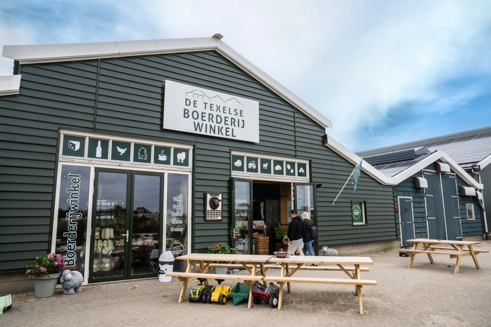
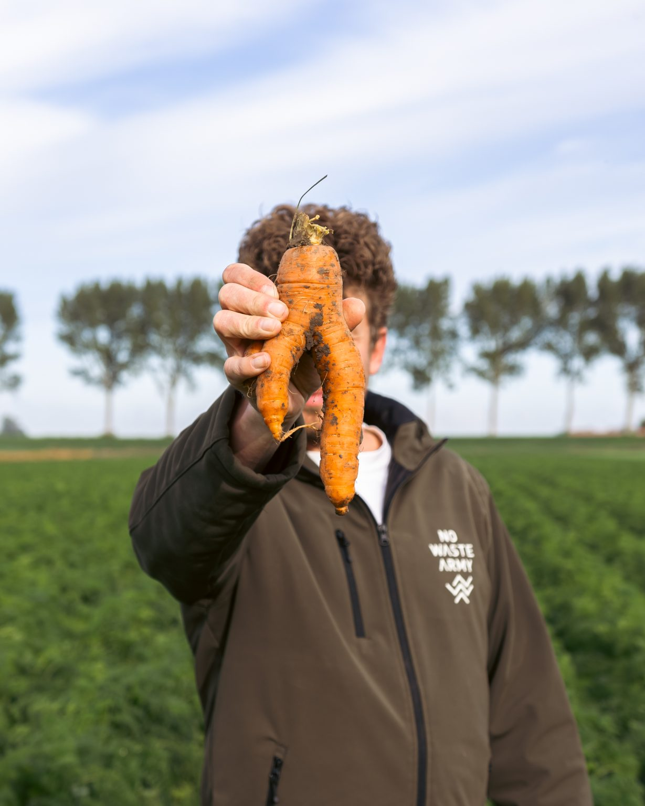
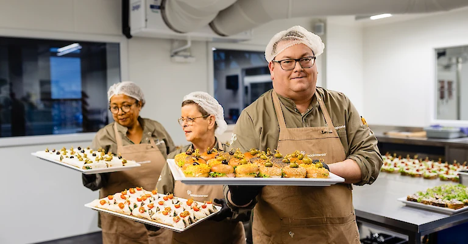
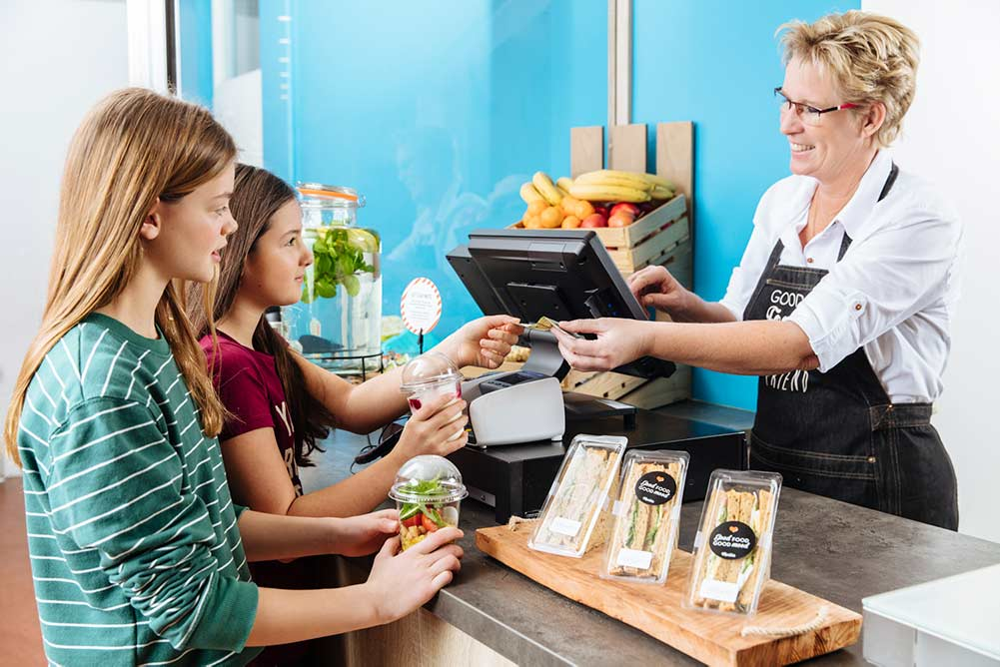

Vier manieren om te beginnen
Ga op zoek naar hoe consumenten zelf een verschil kunnen maken in een korte voedselketen.
En ontdek welke lokale mogelijkheden er in de Maasvallei zijn.
01 RECHTSTREEKS KOPEN
Bezoek een boerderijwinkel, kraampje of voedselautomaat en kies producten uit het seizoen.
Bekijk verkooppunten
02 VERSPILLING TEGENGAAN
Een afwijkende vorm verandert niets aan de smaak. Kies voor geredde groente, fruit en reststromen.
Ontdek initiatieven
03 LOKAAL BESTELLEN
Bestel bij een restaurant, cateraar of verswinkel uit de regio en vraag waar de ingrediënten vandaan komen.
Bekijk lokaal aanbod
04 SAMEN IN BEWEGING
Vraag naar de herkomst van het eten en stel voor om één lokaal product aan het assortiment toe te voegen.
Voorbeeld